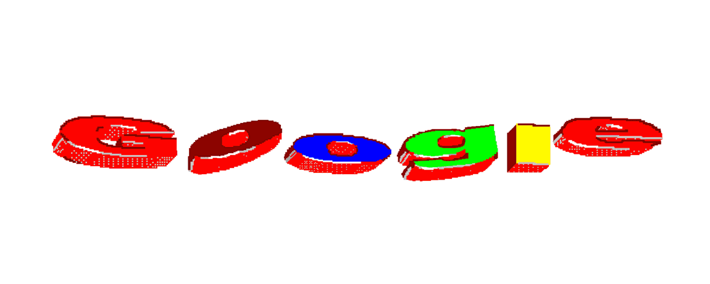

The title in the title tag is used as a title in browser tab and bookmark and it is used for SEO
To set fav icon use- link rel="icon" type="jpg" href="\images\image.jpg"
The css padding property is used to control the distance between the border and the content This is border:10px solid powderblue;padding:60px
This is border:5px solid tomato; padding:30px; margin:50px Use solid colours for border:2px___
THe margine property defines the margine outside the border
Image as a Link
THe a in a tag is anchor Click here to send mail
Button as a link click
The appearance of a link can e designed using CSS like this
In HTML we can give link to another webpage bookmarkclick here
HTML elements can be inline (like anchor or span) or block (like h1, p, div)
We can give a block in line using css like this span element click the span
This is text-decoration:line-through
Image map
Hello this is background-image:url('image.jpg'); opacity:0.5
Hai
Change the display size to view the effect of picture element
border padding and radius in span
dsfasdf click this hello to view the change made using css pseudo-classes
Click inside the input text
Other HTML elements
address:Used to specify address
main:this element is used to specify main part of a html page. One page only have one main element
article:to psecify articles
noscript:it is used to display the content in the element if the browser does not support scripts
section:used to define sections
dfn:definition element
canvas:it is a container for graphics. used to add graphics in web page using js. text inside the canvas element is invisible
this
is
float

this is figcaption
Object element
it is used to embed pluggins in the browser. using object we can also add audio, video, image, webpage
webpage using object
video using object